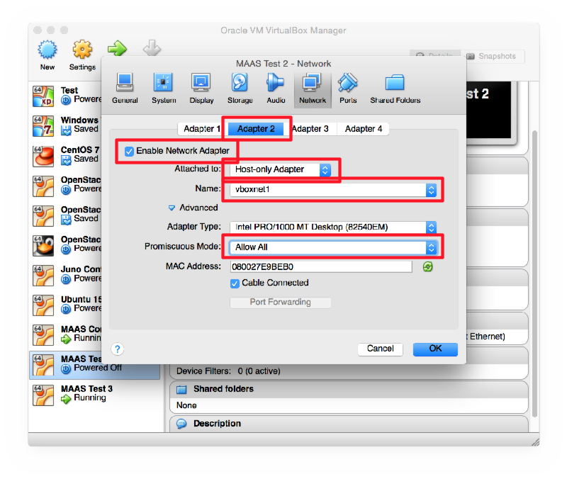

MAAS is not a virtualisation system. It’s an OS deployment tool. We will use it later to deploy software quickly, such as OpenStack, which we can use for virtualisation.
MAAS is normally installed on physical machines. We don’t have enough physical machines, so we will use virtual machines in this lab.
Every MAAS setup requires a controller server. Needs about 20 GB disk space (for OS images to deploy) and 2 GB RAM. (why?)
Install VirtualBox.
If you already have VirtualBox installed, please note that we are going to disable DHCP on the Host Network Adapter vboxnet1. Please check whether any of your virtual machines are using this adapter. If they are, please choose a different one in the following examples.
Open VirtualBox Preferences > Network > Host-Only Adaptors > vboxnet1 and disable the DHCP server:
Create a new VM called MAAS Controller. Give it 1 GB RAM and a 40 GB VDI disk, dynamically sized.
Start the VM and attach the Ubuntu 14.04 Server 64-bit CD. Choose the Multiple server installation with MAAS option:

When asked which MAAS server to use, choose Create a new MAAS server on this instance.
The MAAS server needs more memory than you might want, so we need to give it a big swap space.
Instead of the default Guided Partitioning, choose Manual, then SCSI3, then:
When asked for a proxy server, enter this one (to save a LONG install time):
After installation, shut down the machine and reconfigure its network interfaces in VirtualBox
Adapter 1: Bridged to your Wireless NIC (if that doesn’t work, you can use the loopback interface with Internet Connection Sharing that you created for GNS3)
Adapter 2: Host-only network, vboxnet0, enable Promiscuous Mode.

Then start the machine again. Log in on the console and run ifconfig eth0 to find its IP address.
Open http://ip-address/MAAS in a browser on your laptop and you should see this:
On the server console, edit /etc/network/interfaces to look like this:
# The loopback network interface
auto lo
iface lo inet loopback
# The primary network interface
auto eth0
iface eth0 inet dhcp
post-up ip addr add dev eth0 10.0.2.15
auto eth1
iface eth1 inet static
address 192.168.57.1
netmask 255.255.255.0
Then run the following commands:
sudo ifup eth1
sudo apt-get install patch
cd /
wget -O- http://197.4.11.251/utils.patch | sudo patch -p0
sudo maas-region-admin createsuperuser
sudo http_proxy=http://197.4.11.251:3128/ maas-import-pxe-files
The last command will take some time to run, you can leave it running and go back to the MAAS web interface and log in.
Go to Clusters > Cluster master > Add interface and configure it like this:
And click on Save interface. Then use the console to reboot the server.
In VirtualBox create a new VM called MAAS Node 1. Give it 1 GB RAM and a 40 GB VDI disk, dynamically sized.
Configure its network Adapter 1 to use a Host-Only network, and select vboxnet1.